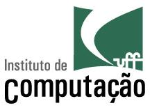

|  |
Heleno de Souza Campos Junior (a.k.a. Heleno Campos) Substitute Teacher, IC/UFF Ph.D. Student, IC/UFF M.Sc., PGCC/UFJF, 2018 B.Sc., Campus Juiz de Fora/IF Sudeste MG, 2016 |
Esta disciplina tem como objetivo capacitar os alunos na aplicação de boas práticas e automação no desenvolvimento de software. Durante o curso, os alunos trabalharão em um projeto de software, aplicando conceitos de engenharia de software com foco na prática. A disciplina cobrirá tópicos como gerência de configuração através do controle de versões e de alterações, automação de testes, integração e entrega contínua, qualidade de código e outras práticas essenciais para o desenvolvimento efetivo de software. Ao final do curso, espera-se que os alunos tenham uma compreensão sólida de como implementar um fluxo de desenvolvimento de software profissional, utilizando as melhores práticas e ferramentas disponíveis.
Disciplina: TCC00251 - TÓPICOS EM ENGENHARIA DE SOFWARE II
Data: sextas, de 18:00 às 22:00
Sala: Lab 305
Média = (2 x Trabalhos práticos + 8 x Trabalho) / 10
APROVADO
(Presença >= 75%) E (Média >= 6)
VERIFICAÇÃO SUPLEMENTAR
(Presença >= 75%) E (4 <= Média < 6)
Será aprovado na VS se tirar nota maior ou igual a 6.
Os alunos devem se dividir em grupos de até 4 alunos (mínimo de 2 alunos. A possibilidade de existência de grupos menores está condicionada ao número de alunos inscritos na disciplina). O objetivo do trabalho será o desenvolvimento em equipe de um projeto de software real, empregando os conceitos apresentados na disciplina. Teremos duas apresentações do progresso do trabalho, onde os grupos devem entregar também um relatório escrito.
Foram reservados dois momentos para apresentações de X a Y minutos por grupo. O grupo poderá utilizar slides e quadro para as apresentações e os slides devem ser entregues no Google Classroom, no dia das apresentações. A primeira apresentação deve conter a XXXXX. A segunda apresentação deve conter XXXXX. Além disso, nessa última apresentação também é esperado um detalhamento das dificuldades encontradas e decisões tomadas. Essas apresentações e documentos serão avaliados pela sua completude e corretude, e capacidade de argumentação em relação às decisões tomadas. Essas decisões devem ser fundamentadas nos princípios estudados durante o curso. Essas apresentações e entregas devem ser feitas nas datas estipuladas na seção Cronograma.
Visando um maior aprofundamento, as aulas foram baseadas em diversos livros. Não é esperado que todos esses livros sejam lidos pelos alunos durante o curso, mas podem ser consultados no caso de dúvidas específicas em um determinado assunto da matéria. A seguir, são listadas as referências completas dos principais livros utilizados. Apesar de essas referências estarem em inglês, muitos desses livros têm versões em português.
| Data | Atividade | Entrega |
|---|---|---|
| 27/09/2024 | Aula - Apresentação da Disciplina - Introdução | |
| 04/10/2024 | Aula - Gerência de Configuração | Sprint 1 Trabalho |
| 11/10/2024 | Aula - Gerência de Configuração | |
| 18/10/2024 | Sem aula (Agenda Acadêmica) | |
| 25/10/2024 | Aula - Testes automatizados | Sprint 2 Trabalho |
| 01/11/2024 | Aula - Testes automatizados | |
| 08/11/2024 | Aula - Automação de build, CI, CD | Sprint 3 Trabalho |
| 15/11/2024 | Sem aula (Feriado) | |
| 22/11/2018 | Apresentações de trabalhos | Sprint 4, Slides e Relatório 1 |
| 29/11/2024 | Aula - Qualidade de código e Refatoração | |
| 06/12/2024 | Aula - Qualidade de código e Refatoração | |
| 13/12/2024 | Aula - Feature Flags | Sprint 5 Trabalho |
| 20/12/2024 | Aula - Feature Flags | |
| 27/12/2024 | Sem aula (Recesso) | |
| 03/01/2025 | Sem aula (Recesso) | |
| 10/01/2025 | Apresentações de trabalhos | Sprint 5, Slides e Relatório 2 |
| 17/01/2025 | Apresentações de trabalhos | |
| 24/01/2025 | Verificação Suplementar | |
| 31/01/2018 | Vista de prova na sala 540 |